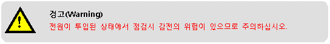
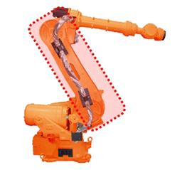
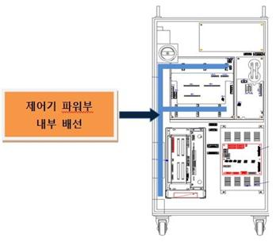
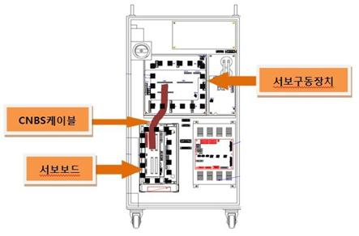
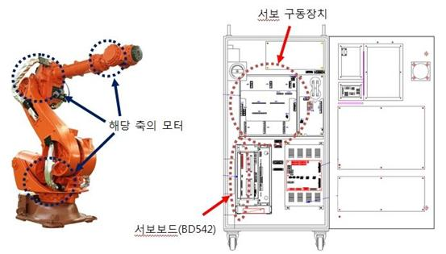

개 요
모터 또는 구동장치에 흐르는 전류가 설정된 제한치 보다 큽니다. 로봇 또는 구동장치를 동작시키기 위해서 서보제어에 의해 만들어진 전류가 내부에 설정된 안전 제한치를 넘을 경우, 서보보드는 에러를 감지하고 로봇을 정지시킵니다.
원인 및 점검방법
|
1. 에러가 발생한 축이 다른 설비와 기계적 간섭이 있는지 확인하십시오.
2. 모터 파워 라인을 점검하십시오. 1) 로봇과 제어기를 연결하는 배선을 확인하십시오. 2) 로봇 기내 배선을 확인하십시오. 3) 제어기 내부 배선을 확인하십시오.
3. 제어기 내부 서보보드와 구동장치간 CNBS케이블을 점검하십시오.
4. 기타의 부품을 교체하십시오.
|
1. 에러가 발생한 축이 다른 설비와 기계적 간섭이 있는지 확인하십시오.
로봇의 기구적 간섭 혹은 충돌이 있을 경우 이 에러가 발생할 수 있습니다. 제한영역을 벗어나 있을 경우에는 수동조작하여 안전영역으로 로봇을 이동시켜야 합니다.
2. 모터 파워 라인을 점검하십시오.
1차 전원을 Off하고 해당축 구동장치의 U, V, W를 분리하여 각 상의 단락 유무를 점검하십시오. 멀티미터(테스터기)와 같은 장비를 이용하여 각 상의 배선을 1:1로 체크하십시오.

1) 로봇과 제어기를 연결하는 배선을 확인하십시오.
제어기와 로봇 또는 구동장치를 연결하는 배선을 제거하여 각 상(U상, V상, W상)이 서로 또는 접지와 단락된 곳이 있는지 확인하시고, 단락된 곳이 있으면 해당하는 배선을 교체하셔야 합니다.
그림 1. 로봇과 제어기간 기본 설치 구성도
2) 로봇내부의 기내배선을 점검하십시오.
로봇 내부에 모터와 연결되어 있는 배선에 단락 또는 잘못 배선된 곳이 있는지 점검이 필요합니다.

그림 2. 로봇 기내 배선
3) 제어기 내부 배선을 점검하십시오.
제어기 내부에 앰프와 설치되어 있는 배선 점검이 필요합니다.

그림 3. 제어기 내부(파워부)
3. 제어기 내부 서보 보드(DSP보드)와 구동장치간 CNBS케이블을 점검하십시오.
CNBS케이블이 올바로 설치되어 있는지 점검하십시오. 케이블이 올바르게 설치되어 있지 않거나 케이블 불량일 경우 해당 에러가 발생할 수 있습니다.

그림 4. 제어기 내부(CNBS 케이블)
4. 기타의 부품을 교체하십시오.
서보보드(BD542) à 서보 구동장치 à 모터의 순으로 교체하여 에러발생 여부를 확인하십시오.
